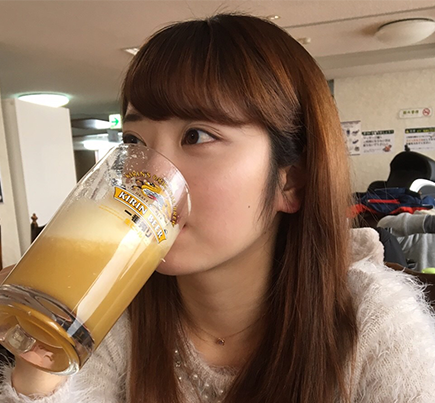

ここではFORTUNAを仕切っている幹部たちを紹介します！！
会長：太田 登揮
我らが会長！！
このサークルを引っ張ってくれている最重要ポジションです。
最近の趣味は競馬。
副会長：木戸 広大
副会長。
会長を支える二本柱のうちの一人であり、後輩から好かれる兄貴的存在である。
他に企画担当長という役職にも就いている。
彼女募集中。

副会長：檜垣 寛太
FORTUNAの二人目の副会長。
会長を支えるもう一人の副会長であり、先代から受け継がれているこのサークルのお笑い担当である。
一応、会計長という役職にも就いているが、会計担当の鈴木啓太に仕事を丸投げしている。
企画担当：鹿島 瑞希
常にすっぴんでいることに誇りを持っている。
企画担当というポジションで、合宿など様々なイベントを企画している。
遅刻常習犯であり、遅れることに対して一欠片の罪悪感も持ち合わせていない。

SNS担当：町田 優里子
このサークルのマドンナ。
落とした男は星の数。
SNS担当であり、主にTwitterの更新をしている。
落とした男は星の数。
SNS担当であり、主にTwitterの更新をしている。
会計,サイト管理人：鈴木 啓太
このサイトを制作した張本人。
一応会計というポジションだが、これからはサイトの管理人として生きていき、
このサイトを見てくれる皆様がより深くFORTUNAのことを知ってもらえるよう、全力を尽くします！！